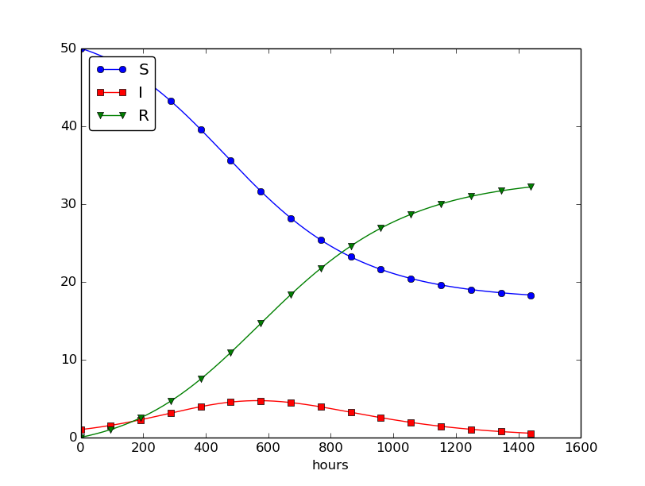
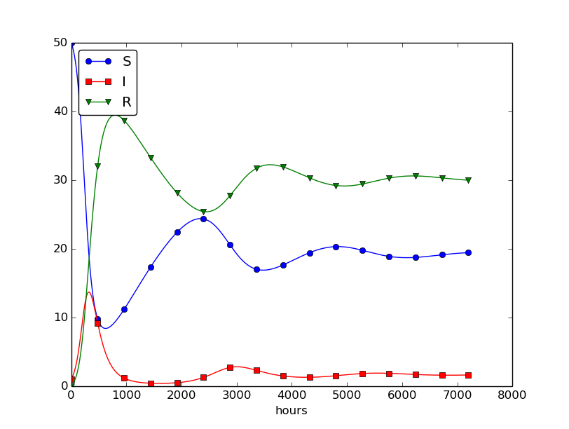

Spreading of diseases
Our aim with this section is to show in detail how one can apply mathematics and programming to investigate spreading of diseases. The mathematical model is now a system of three differential equations with three unknown functions. To derive such a model, we can use mainly intuition, so no specific background knowledge of diseases is required.
Spreading of a flu
Imagine a boarding school out in the country side. This school is a small and closed society. Suddenly, one or more of the pupils get a flu. We expect that the flu may spread quite effectively or die out. The question is how many of the pupils and the school's staff will be affected. Some quite simple mathematics can help us to achieve insight into the dynamics of how the disease spreads.
Let the mathematical function \( S(t) \) count how many individuals, at time \( t \), that have the possibility to get infected. Here, \( t \) may count hours or days, for instance. These individuals make up a category called susceptibles, labeled as S. Another category, I, consists of the individuals that are infected. Let \( I(t) \) count how many there are in category I at time \( t \). An individual having recovered from the disease is assumed to gain immunity. There is also a small possibility that an infected will die. In either case, the individual is moved from the I category to a category we call the removed category, labeled with R. We let \( R(t) \) count the number of individuals in the \( R \) category at time \( t \). Those who enter the \( R \) category, cannot leave this category.
To summarize, the spreading of this disease is essentially the dynamics of moving individuals from the S to the I and then to the R category:

We can use mathematics to more precisely describe the exchange between the categories. The fundamental idea is to describe the changes that take place during a small time interval, denoted by \( \Delta t \).
Our disease model is often referred to as a compartment model, where quantities are shuffled between compartments (here a synonym for categories) according to some rules. The rules express changes in a small time interval \( \Delta t \), and from these changes we can let \( \Delta t \) go to zero and obtain derivatives. The resulting equations then go from difference equations (with finite \( \Delta t \)) to differential equations (\( \Delta t\rightarrow 0 \)).
We introduce a uniform mesh in time, \( t_n=n\Delta t \), \( n=0,\ldots,N_t \), and seek \( S \) at the mesh points. The numerical approximation to \( S \) at time \( t_n \) is denoted by \( S^n \). Similarly, we seek the unknown values of \( I(t) \) and \( R(t) \) at the mesh points and introduce a similar notation \( I^n \) and \( R^n \) for the approximations to the exact values \( I(t_n) \) and \( R(t_n) \).
In the time interval \( \Delta t \) we know that some people will be infected, so \( S \) will decrease. We shall soon argue by mathematics that there will be \( \beta\Delta tSI \) new infected individuals in this time interval, where \( \beta \) is a parameter reflecting how easy people get infected during a time interval of unit length. If the loss in \( S \) is \( \beta\Delta tSI \), we have that the change in \( S \) is $$ \begin{equation} S^{n+1} - S^n = -\beta\Delta tS^nI^n\thinspace . \tag{4.9} \end{equation} $$ Dividing by \( \Delta t \) and letting \( \Delta t\rightarrow 0 \), makes the left-hand side approach \( S'(t_n) \) such that we obtain a differential equation $$ \begin{equation} S' = -\beta SI\thinspace . \tag{4.10} \end{equation} $$ The reasoning in going from the difference equation (4.9) to the differential equation (4.10) follows exactly the steps explained in the section Derivation of the model.
Before proceeding with how \( I \) and \( R \) develops in time, let us explain the formula \( \beta\Delta tSI \). We have \( S \) susceptibles and \( I \) infected people. These can make up \( SI \) pairs. Now, suppose that during a time interval \( T \) we measure that \( m \) actual pairwise meetings do occur among \( n \) theoretically possible pairings of people from the S and I categories. The probability that people meet in pairs during a time \( T \) is (by the empirical frequency definition of probability) equal to \( m/n \), i.e., the number of successes divided by the number of possible outcomes. From such statistics we normally derive quantities expressed per unit time, i.e., here we want the probability per unit time, \( \mu \), which is found from dividing by \( T \): \( \mu = m/(nT) \).
Given the probability \( \mu \), the expected number of meetings per time interval of \( SI \) possible pairs of people is (from basic statistics) \( \mu SI \). During a time interval \( \Delta t \), there will be \( \mu SI\Delta t \) expected number of meetings between susceptibles and infected people such that the virus may spread. Only a fraction of the \( \mu\Delta t SI \) meetings are effective in the sense that the susceptible actually becomes infected. Counting that \( m \) people get infected in \( n \) such pairwise meetings (say 5 are infected from 1000 meetings), we can estimate the probability of being infected as \( p=m/n \). The expected number of individuals in the S category that in a time interval \( \Delta t \) catch the virus and get infected is then \( p\mu\Delta t SI \). Introducing a new constant \( \beta =p\mu \) to save some writing, we arrive at the formula \( \beta\Delta tSI \).
The value of \( \beta \) must be known in order to predict the future with the disease model. One possibility is to estimate \( p \) and \( \mu \) from their meanings in the derivation above. Alternatively, we can observe an "experiment" where there are \( S_0 \) susceptibles and \( I_0 \) infected at some point in time. During a time interval \( T \) we count that \( N \) susceptibles have become infected. Using (4.9) as a rough approximation of how \( S \) has developed during time \( T \) (and now \( T \) is not necessarily small, but we use (4.9) anyway), we get $$ \begin{equation} N = \beta T S_0I_0\quad\Rightarrow\quad\beta = {N\over TS_0I_0}\thinspace . \tag{4.11} \end{equation} $$
We need an additional equation to describe the evolution of \( I(t) \). Such an equation is easy to establish by noting that the loss in the S category is a corresponding gain in the I category. More precisely, $$ \begin{equation} I^{n+1} - I^n = \beta\Delta tS^nI^n\thinspace . \tag{4.12} \end{equation} $$ However, there is also a loss in the I category because people recover from the disease. Suppose that we can measure that \( m \) out of \( n \) individuals recover in a time period \( T \) (say 10 of 40 sick people recover during a day: \( m=10 \), \( n=40 \), \( T=24 \) h). Now, \( \gamma =m/(nT) \) is the probability that one individual recovers in a unit time interval. Then (on average) \( \gamma\Delta t I \) infected will recover in a time interval \( \Delta t \). This quantity represents a loss in the I category and a gain in the R category. We can therefore write the total change in the I category as $$ \begin{equation} I^{n+1} - I^n = \beta\Delta tS^nI^n - \gamma\Delta t I^n\thinspace . \tag{4.13} \end{equation} $$
The change in the R category is simple: there is always an increase from the I category: $$ \begin{equation} R^{n+1} - R^n = \gamma\Delta t I^n\thinspace . \tag{4.14} \end{equation} $$ Since there is no loss in the R category (people are either recovered and immune, or dead), we are done with the modeling of this category. In fact, we do not strictly need the equation (4.14) for \( R \), but extensions of the model later will need an equation for \( R \).
Dividing by \( \Delta t \) in (4.13) and (4.14) and letting \( \Delta t\rightarrow 0 \), results in the corresponding differential equations $$ \begin{equation} I' = \beta\Delta tSI - \gamma\Delta t I, \tag{4.15} \end{equation} $$ and $$ \begin{equation} R' = \gamma I\thinspace . \tag{4.16} \end{equation} $$
To summarize, we have derived difference equations (4.9)-(4.14), and alternative differential equations (4.15)-(4.16). For reference, we list the complete set of the three difference equations: $$ \begin{align} S^{n+1} &= S^n -\beta\Delta tS^nI^n, \tag{4.17}\\ I^{n+1} &= I^n + \beta\Delta tS^nI^n - \gamma\Delta t I^n, \tag{4.18}\\ R^{n+1} &= R^n + \gamma\Delta t I^n\thinspace . \tag{4.19} \end{align} $$ Note that we have isolated the new unknown quantities \( S^{n+1} \), \( I^{n+1} \), and \( R^{n+1} \) on the left-hand side, such that these can readily be computed if \( S^n \), \( I^n \), and \( R^n \) are known. To get such a procedure started, we need to know \( S^0 \), \( I^0 \), \( R^0 \). Obviously, we also need to have values for the parameters \( \beta \) and \( \gamma \).
We also list the system of three differential equations: $$ \begin{align} S' &= -\beta SI, \tag{4.20}\\ I' &= \beta SI - \gamma I, \tag{4.21}\\ R' &= \gamma I\thinspace . \tag{4.22} \end{align} $$ This differential equation model (and also its discrete counterpart above) is known as a SIR model. The input data to the differential equation model consist of the parameters \( \beta \) and \( \gamma \) as well as the initial conditions \( S(0)=S_0 \), \( I(0)=I_0 \), and \( R(0)=R_0 \).
A Forward Euler method for the differential equation system
Let us apply the same principles as we did in the section Numerical solution to discretize the differential equation system by the Forward Euler method. We already have a time mesh and time-discrete quantities \( S^n \), \( I^n \), \( R^n \), \( n=0,\ldots,N_t \). The three differential equations are assumed to be valid at the mesh points. At the point \( t_n \) we then have $$ \begin{align} S'(t_n) &= -\beta S(t_n)I(t_n), \tag{4.23}\\ I'(t_n) &= \beta S(t_n)I(t_n) - \gamma I(t_n), \tag{4.24}\\ R'(t_n) &= \gamma I(t_n), \tag{4.25} \end{align} $$ for \( n=0,1,\ldots,N_t \). This is an approximation since the differential equations are originally valid at all times \( t \) (usually in some finite interval \( [0,T] \)). Using forward finite differences for the derivatives results in an additional approximation, $$ \begin{align} \frac{S^{n+1}- S^n}{\Delta t} &= -\beta S^nI^n, \tag{4.26}\\ \frac{I^{n+1}- I^n}{\Delta t} &= \beta S^nI^n - \gamma I^n, \tag{4.27}\\ \frac{R^{n+1}- R^n}{\Delta t} &= \gamma I^n\thinspace . \tag{4.28} \end{align} $$ As we see, these equations are identical to the difference equations that naturally arise in the derivation of the model. However, other numerical methods than the Forward Euler scheme will result in slightly different difference equations.
Programming the numerical method; the special case
The computation of (4.26)-(4.28) can be readily made in a computer program SIR1.m:
% Time unit: 1 h
beta = 10/(40*8*24);
gamma = 3/(15*24);
dt = 0.1; % 6 min
D = 30; % Simulate for D days
N_t = floor(D*24/dt); % Corresponding no of hours
t = linspace(0, N_t*dt, N_t+1);
S = zeros(N_t+1, 1);
I = zeros(N_t+1, 1);
R = zeros(N_t+1, 1);
% Initial condition
S(1) = 50;
I(1) = 1;
R(1) = 0;
% Step equations forward in time
for n = 1:N_t
S(n+1) = S(n) - dt*beta*S(n)*I(n);
I(n+1) = I(n) + dt*beta*S(n)*I(n) - dt*gamma*I(n);
R(n+1) = R(n) + dt*gamma*I(n);
end
plot(t, S, t, I, t, R);
legend('S', 'I', 'R', 'Location','northwest');
xlabel('hours');
print('tmp', '-dpdf'); print('tmp', '-dpng');
This program was written to investigate the spreading of a flu at the mentioned boarding school, and the reasoning for the specific choices \( \beta \) and \( \gamma \) goes as follows. At some other school where the disease has already spread, it was observed that in the beginning of a day there were 40 susceptibles and 8 infected, while the numbers were 30 and 18, respectively, 24 hours later. Using 1 h as time unit, we then have from (4.11) that \( \beta = 10/(40\cdot 8\cdot 24) \). Among 15 infected, it was observed that 3 recovered during a day, giving \( \gamma = 3/(15\cdot 24) \). Applying these parameters to a new case where there is one infected initially and 50 susceptibles, gives the graphs in Figure 28. These graphs are just straight lines between the values at times \( t_i=i\Delta t \) as computed by the program. We observe that \( S \) reduces as \( I \) and \( R \) grows. After about 30 days everyone has become ill and recovered again.
Figure 28: Natural evolution of a flu at a boarding school.

We can experiment with \( \beta \) and \( \gamma \) to see whether we get an outbreak of the disease or not. Imagine that a "wash your hands" campaign was successful and that the other school in this case experienced a reduction of \( \beta \) by a factor of 5. With this lower \( \beta \) the disease spreads very slowly so we simulate for 60 days. The curves appear in Figure 29.
Figure 29: Small outbreak of a flu at a boarding school (\( \beta \) is much smaller than in Figure 28).

Outbreak or not
Looking at the equation for \( I \), it is clear that we must have \( \beta
SI - \gamma I>0 \) for \( I \) to increase. When we start the simulation it
means that
$$ \beta S(0)I(0) - \gamma I(0)>0,
$$
or simpler
$$
\begin{equation}
\frac{\beta S(0)}{\gamma} > 1
\tag{4.29}
\end{equation}
$$
to increase the number of infected people and accelerate the spreading
of the disease. You can run the SIR1.m program with a smaller \( \beta \)
such that (4.29) is violated and observe that there is
no outbreak.
Abstract problem and notation
When we had a specific differential equation with one unknown, we quickly turned to an abstract differential equation written in the generic form \( u'=f(u,t) \). We refer to such a problem as a scalar ODE. A specific equation corresponds to a specific choice of the formula \( f(u,t) \) involving \( u \) and (optionally) \( t \).
It is advantageous to also write a system of differential equations in the same abstract notation, $$ u'=f(u,t),$$ but this time it is understood that \( u \) is a vector of functions and \( f \) is also vector. We say that \( u'=f(u,t) \) is a vector ODE or system of ODEs in this case. For the SIR model we introduce the two 3-vectors, one for the unknowns, $$ u = (S(t), I(t), R(t)),$$ and one for the right-hand side functions, $$ f(u,t) = (-\beta SI, \beta SI -\gamma I, \gamma I)\thinspace .$$ The equation \( u'=f(u,t) \) means setting the two vectors equal, i.e., each component must be equal. Since \( u'=(S', I', R') \), we get that \( u'=f \) implies $$ \begin{align*} S' &= -\beta SI,\\ I' &= \beta SI - \gamma I,\\ R' &= \gamma I\thinspace . \end{align*} $$ The generalized short notation \( u'=f(u,t) \) is very handy since we can derive numerical methods and implement software for this abstract system and in a particular application just identify the formulas in the \( f \) vector, implement these, and call functionality that solves the differential equation system.
Programming the numerical method; the general case
In Matlab code, the Forward Euler step $$ u^{n+1} = u^n + \Delta t f(u^n, t_n),$$ being a scalar or a vector equation, can be coded as
u(n+1,:) = u(n,:) + dt*f(u(n,:), t(n))
both in the scalar and vector case. In the vector case,
u(n,:) is a one-dimensional array of length \( m+1 \)
holding the mathematical quantity
\( u^n \), and the Matlab function f must return an array
of length \( m+1 \). Then the expression u(n,:) + dt*f(u(n,:), t(n))
is an array plus a scalar times an array.
For all this to work, the complete numerical solution must be represented by a
two-dimensional array, created by u = zeros(N_t+1, m+1).
The first index counts the time points and the second the components
of the solution vector at one time point.
That is, u(n,i) corresponds
to the mathematical quantity \( u^n_i \). Writing u(n,:) picks out all the
components in the solution at the time point with index n.
The nice feature of these facts is that the same piece of
Matlab code works for both a scalar ODE and a system of ODEs!
The ode_FE function for the vector ODE is placed in the file
ode_system_FE.m
and was written as follows:
function [u, t] = ode_FE(f, U_0, dt, T)
N_t = floor(T/dt);
u = zeros(N_t+1, length(U_0));
t = linspace(0, N_t*dt, length(u));
u(1,:) = U_0; % Initial values
t(1) = 0;
for n = 1:N_t
u(n+1,:) = u(n,:) + dt*f(u(n,:), t(n));
end
end
Let us show how the previous SIR model can be solved using the new
general ode_FE that can solve any vector ODE. The user's f(u, t)
function takes a vector u, with three components corresponding to
\( S \), \( I \), and \( R \) as argument, along with the current time point t(n),
and must return the values of the formulas of the right-hand sides
in the vector ODE. An appropriate implementation is
function result = f(u, t)
S = u(1); I = u(2); R = u(3);
result = [-beta*S*I beta*S*I - gamma*I gamma*I]
end
where beta and gamma are problem specific parameters set outside of that function.
Note that the S, I, and R values correspond to \( S^n \), \( I^n \), and \( R^n \).
These values are then just inserted in the various formulas
in the vector ODE.
We can now show a function
(in file
demo_SIR.m)
that runs the previous SIR example,
but which applies the generic ode_FE function:
function demo_SIR()
% Test case using an SIR model
dt = 0.1; % 6 min
D = 30; % Simulate for D days
N_t = floor(D*24/dt); % Corresponding no of hours
T = dt*N_t; % End time
U_0 = [50 1 0];
f_handle = @f;
[u, t] = ode_FE(f_handle, U_0, dt, T);
S = u(:,1);
I = u(:,2);
R = u(:,3);
plot(t, S, 'b-', t, I, 'r-', t, R, 'g-');
legend('S', 'I', 'R');
xlabel('hours');
% Consistency check:
N = S(1) + I(1) + R(1);
eps = 1E-12; % Tolerance for comparing real numbers
for n = 1:length(S)
err = abs(S(n) + I(n) + R(n) - N);
if (err > eps)
error('demo_SIR: error=%g', err);
end
end
end
function result = f(u,t)
beta = 10/(40*8*24);
gamma = 3/(15*24);
S = u(1); I = u(2); R = u(3);
result = [-beta*S*I beta*S*I - gamma*I gamma*I];
end
Recall that the u returned from ode_FE contains all components
(\( S \), \( I \), \( R \)) in the solution vector at all time points. We
therefore need to extract the \( S \), \( I \), and \( R \) values in separate
arrays for further analysis and easy plotting.
Another key feature of this higher-quality code is the consistency check. By adding the three differential equations in the SIR model, we realize that \( S' + I' + R'=0 \), which means that \( S+I+R=\mbox{const} \). We can check that this relation holds by comparing \( S^n+I^n+R^n \) to the sum of the initial conditions. The check is not a full-fledged verification, but it is a much better than doing nothing and hoping that the computation is correct. Exercise 47: Find an appropriate time step; SIR model suggests another method for controlling the quality of the numerical solution.
Time-restricted immunity
Let us now assume that immunity after the disease only lasts for some certain time period. This means that there is transport from the R state to the S state:

Modeling the loss of immunity
is very similar to modeling recovery from the disease: the
amount of people losing immunity is proportional to the amount
of recovered patients and the length of the time interval \( \Delta t \).
We can therefore write the loss in the R category as
\( -\nu\Delta t R \) in time \( \Delta t \), where \( \nu^{-1} \) is the
typical time it takes to lose immunity. The loss in \( R(t) \)
is a gain in \( S(t) \). The "budgets" for the categories
therefore become
$$
\begin{align}
S^{n+1} &= S^n -\beta\Delta tS^nI^n + \nu\Delta t R^n,
\tag{4.30}\\
I^{n+1} &= I^n + \beta\Delta tS^nI^n - \gamma\Delta t I^n,
\tag{4.31}\\
R^{n+1} &= R^n + \gamma\Delta t I^n - \nu\Delta t R^n\thinspace .
\tag{4.32}
\end{align}
$$
Dividing by \( \Delta t \) and letting \( \Delta t\rightarrow 0 \) gives
the differential equation system
$$
\begin{align}
S' &= -\beta SI + \nu R,
\tag{4.33}\\
I' &= \beta SI - \gamma I,
\tag{4.34}\\
R' &= \gamma I - \nu R\thinspace .
\tag{4.35}
\end{align}
$$
This system can be solved by the same methods as we demonstrated for
the original SIR model. Only one modification in the program is
necessary: adding nu*R[n] to the S[n+1] update and subtracting
the same quantity in the R[n+1] update:
for n = 1:N_t
S(n+1) = S(n) - dt*beta*S(n)*I(n) + dt*nu*R(n)
I(n+1) = I(n) + dt*beta*S(n)*I(n) - dt*gamma*I(n)
R(n+1) = R(n) + dt*gamma*I(n) - dt*nu*R(n)
end
The modified code is found in the file SIR2.m.
Setting \( \nu^{-1} \) to 50 days, reducing \( \beta \) by a factor of 4 compared to the previous example (\( \beta=0.00033 \)), and simulating for 300 days gives an oscillatory behavior in the categories, as depicted in Figure 30. It is easy now to play around and study how the parameters affect the spreading of the disease. For example, making the disease slightly more effective (increase \( \beta \) to 0.00043) and increasing the average time to loss of immunity to 90 days lead to other oscillations in Figure 31.
Figure 30: Including loss of immunity.

Figure 31: Increasing \( \beta \) and reducing \( \nu \) compared to Figure 30.

Incorporating vaccination
We can extend the model to also include vaccination. To this end, it can be useful to track those who are vaccinated and those who are not. So, we introduce a fourth category, V, for those who have taken a successful vaccination. Furthermore, we assume that in a time interval \( \Delta t \), a fraction \( p\Delta t \) of the S category is subject to a successful vaccination. This means that in the time \( \Delta t \), \( p\Delta t S \) people leave from the S to the V category. Since the vaccinated ones cannot get the disease, there is no impact on the I or R categories. We can visualize the categories, and the movement between them, as

The new, extended differential equations with the \( V \) quantity become $$ \begin{align} S' &= -\beta SI + \nu R -pS, \tag{4.36}\\ V' &= pS, \tag{4.37}\\ I' &= \beta SI - \gamma I, \tag{4.38}\\ R' &= \gamma I - \nu R\thinspace . \tag{4.39} \end{align} $$ We shall refer to this model as the SIRV model.
The new equation for \( V' \) poses no difficulties when it comes to the
numerical method. In a Forward Euler scheme we simply add an update
$$ V^{n+1} = V^n + p \Delta t S^n\thinspace .$$
The program needs to store \( V(t) \) in an additional array V,
and the plotting command must be extended with more arguments to
plot V versus t as well. The complete code is found in
the file SIRV1.m.
Using \( p=0.0005 \) and \( p=0.0001 \) as values for the vaccine efficiency parameter, the effect of vaccination is seen in Figure 32 (other parameters are as in Figure 30).
Figure 32: The effect of vaccination: \( p=0005 \) (left) and \( p=0.0001 \) (right).

Discontinuous coefficients: a vaccination campaign
What about modeling a vaccination campaign? Imagine that six days after the outbreak of the disease, the local health station launches a vaccination campaign. They reach out to many people, say 10 times as efficiently as in the previous (constant vaccination) case. If the campaign lasts for 10 days we can write $$ \begin{equation*} p(t) = \left\lbrace\begin{array}{ll} 0.005,& 6\cdot 24\leq t\leq 15\cdot 24,\\ 0,& \hbox{otherwise} \end{array}\right.\end{equation*} $$ Note that we must multiply the \( t \) value by 24 because \( t \) is measured in hours, not days. In the differential equation system, \( pS(t) \) must be replaced by \( p(t)S(t) \), and in this case we get a differential equation system with a term that is discontinuous. This is usually quite a challenge in mathematics, but as long as we solve the equations numerically in a program, a discontinuous coefficient is easy to treat.
There are two ways to implement the discontinuous coefficient \( p(t) \): through a function and through an array. The function approach is perhaps the easiest:
function value = p(t)
if (6*24 <= t <= 15*24)
value = 0.005;
else
value = 0;
end
end
In the code for updating the arrays S and V we get a term
p(t(n))*S(n).
We can also let \( p(t) \) be an array filled with correct values prior
to the simulation. Then we need to allocate an array p of length N_t+1
and find the indices corresponding to the time period between 6 and 15
days. These indices are found from the time point divided by
\( \Delta t \). That is,
p = zeros(N_t+1,1);
start_index = 6*24/dt + 1;
stop_index = 15*24/dt + 1;
p(start_index:stop_index) = 0.005;
The \( p(t)S(t) \) term in the updating formulas for \( S \) and \( V \) simply becomes
p(n)*S(n). The file SIRV2.m
contains a program based on filling an array p.
The effect of a vaccination campaign is illustrated in Figure 33. All the data are as in Figure 32 (left), except that \( p \) is ten times stronger for a period of 10 days and \( p=0 \) elsewhere.
Figure 33: The effect of a vaccination campaign.